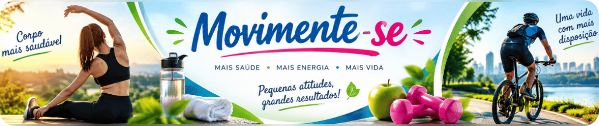
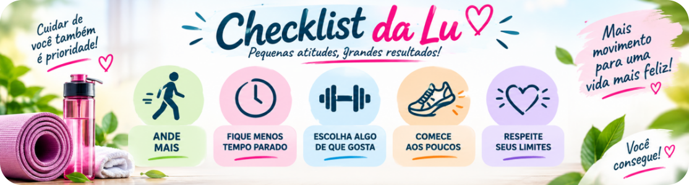

Quando alguém fala em atividade física, é comum imaginar academia, aparelhos, roupas esportivas e uma hora reservada na agenda. Mas movimento não começa necessariamente na academia.
Caminhar até algum lugar próximo, subir escadas, passear com o cachorro, pedalar, dançar e até algumas atividades realizadas em casa podem colocar o corpo em movimento.
O Guia de Atividade Física para a População Brasileira explica que a atividade física pode acontecer no tempo livre, nos deslocamentos, no trabalho ou estudo e nas tarefas domésticas.
Antes de pensar em mudar completamente a rotina, pode existir espaço para se movimentar um pouco mais dentro da vida que você já tem.
1. Comece pequeno
Para começar, não é necessário transformar a rotina de uma vez. Uma caminhada curta, uma volta no quarteirão, alguns minutos dançando, ir a pé a um lugar próximo, brincar com as crianças ou passear com o cachorro já são formas de colocar o corpo em movimento.
O mais importante é encontrar possibilidades que façam sentido para o seu dia a dia e que possam ser repetidas com regularidade.
2. Aproveite os deslocamentos
Nem todo deslocamento precisa virar exercício. Mas alguns podem virar oportunidade de movimento.
Quando for seguro e viável, pequenas distâncias podem ser feitas caminhando ou de bicicleta. O Ministério da Saúde inclui os deslocamentos entre os diferentes contextos em que a atividade física pode acontecer, e o INCA também cita caminhar ou pedalar para compromissos cotidianos como possibilidades de incorporar movimento à rotina.
Dica da Lu: Procure espaço para o movimento no dia que você já tem.
Antes de pensar “preciso arrumar tempo para me exercitar”, experimente perguntar: “onde cabe um pouco mais de movimento no meu dia?”
3. Ficou muito tempo sentado? Levante um pouco
Trabalho, televisão, computador e celular podem nos deixar muito tempo praticamente na mesma posição.
O Guia brasileiro recomenda evitar longos períodos em comportamento sedentário e traz uma orientação prática: a cada uma hora nessa situação, movimentar-se por pelo menos cinco minutos, se possível. Pode ser uma oportunidade para levantar, mudar de posição, beber água ou caminhar um pouco.
Não precisa transformar a pausa em treino. É apenas uma forma de interromper o tempo parado.

4. Escada ou elevador? Às vezes, escolha a escada
Não precisa declarar guerra ao elevador. 😂
Mas, quando for adequado e seguro para você, usar as escadas é outra maneira de colocar movimento em algo que já faz parte do dia. O INCA cita subir pelas escadas em vez de usar o elevador entre as possibilidades de aumentar a atividade física cotidiana.
A ideia não é criar obrigação. É perceber oportunidades.
5. Escolha movimentos de que você goste
Atividade física não precisa ser castigo. Caminhar, dançar, pedalar, nadar, jogar bola, passear ao ar livre, brincar com os filhos ou netos e outras atividades podem fazer parte da rotina.
O INCA recomenda experimentar atividades que tenham relação com o perfil e as preferências de cada pessoa. Isso pode ajudar a encontrar formas de movimento que façam sentido no cotidiano.
Método Mundo LuFiNas
E quanto tempo de atividade física é recomendado?
Para adultos, o Guia de Atividade Física para a População Brasileira recomenda pelo menos 150 minutos por semana de atividade física moderada ou 75 minutos por semana de atividade física vigorosa, ou uma combinação equivalente.
Esses números não precisam virar uma barreira para quem está começando. A orientação geral é começar dentro das próprias possibilidades e aumentar gradualmente o tempo ou a intensidade conforme a adaptação e as condições individuais.

Respeite seu corpo
Movimentar-se mais deve acontecer respeitando as condições individuais e os próprios limites.
O Guia do Ministério da Saúde orienta procurar uma Unidade Básica de Saúde em caso de lesão ou desconforto anormal, como dor na região do peito ou tontura. Algumas condições de saúde também podem exigir orientação individualizada de um profissional de saúde.
Esta matéria traz orientações gerais.
Ela não substitui avaliação ou orientação profissional quando necessária.
Checklist da Lu

Dica da Lu: Comece pela rotina que você já tem.
Você não precisa esperar pela rotina perfeita para começar a se movimentar. Procure uma possibilidade que caiba no seu dia.
Para terminar...
Academia pode ser uma excelente opção, mas não é a única maneira de se movimentar. O INCA destaca que atividades realizadas em academias são possibilidades, mas não são as únicas.
Caminhar, dançar, pedalar, subir escadas, fazer pequenos deslocamentos a pé e interromper longos períodos sentado são maneiras de trazer mais movimento para a vida cotidiana.
Não precisa começar grande. Comece com o que é possível para você.
Fontes consultadas
Ministério da Saúde — Guia de Atividade Física para a População Brasileira. Principal referência desta matéria para as recomendações de atividade física, formas de incorporar movimento ao cotidiano e redução do comportamento sedentário.
Guia de Atividade Física para a População Brasileira — Ministério da Saúde
Instituto Nacional de Câncer (INCA) — Como incluir a atividade física como parte da rotina diária. Orientações sobre formas de incorporar atividade física ao cotidiano, incluindo caminhada, bicicleta, escadas e outras possibilidades além da academia.